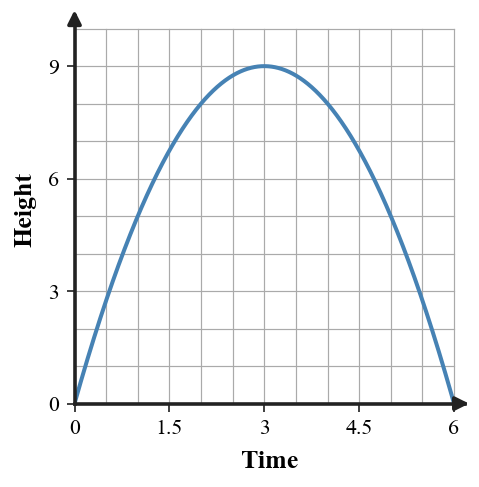

Factored Form and Zeros
Mathematical idea: A product is zero when one factor is zero, so factored form reveals where a quadratic graph crosses the x-axis.
Today you will find zeros from factors, use intercepts to sketch quadratic graphs, and interpret zeros in context. You will also analyze what changes and what stays the same when a quadratic is stretched or reflected.
Learning Target
Learning Target: Students will connect factors, zeros, intercepts, and graphs of quadratic functions.
I can statements
- I can formulate quadratic functions in factored form from zeros or intercepts.
- I can use factored form to predict zeros and x-intercepts of quadratic graphs.
- I can extend connections among factors, zeros, intercepts, and graph behavior.
What's To Come
This is a long-range preview for future lessons. Do not solve it today. Instead, annotate it individually. Circle anything familiar, underline symbols or directions that seem important, and write notes about what information you think will be needed later.
As you annotate, ask yourself: What parts (words, symbols, graphs) do you KNOW? What parts look FAMILIAR? What parts look like jibberish?
Create a factored quadratic model for a situation where an object starts on the ground, rises, and returns to the ground after $6$ seconds. Include the equation, the zeros, and a sentence interpreting the zeros.
Intro
Directions
Read the introduction aloud with a partner or in a small group. As you read, annotate the text by highlighting important ideas, circling key vocabulary, and writing short notes about connections, questions, or predictions in the margins.
Factored form shows a quadratic as a product of factors. When the product equals zero, at least one factor must equal zero, so each factor can reveal an input that makes the output zero. Those input values are called zeros.
Zeros have a graphical meaning. If $f(x)=0$, the output is zero, so the point lies on the x-axis. That means zeros correspond to x-intercepts on the graph of the quadratic function.
A multiplier outside the factors can make a parabola wider, narrower, or reflected. The x-values that make the factors equal zero still make the whole product zero. The graph changes shape, but the x-intercepts can stay fixed.
Tables near the intercepts can support the same reasoning. Inputs on one side of a zero may give positive or negative outputs, and the zero itself gives output 0. A sketch should agree with the table, the factors, and the intercepts.
In contexts, zeros often represent meaningful start or end values. A height model may have a zero when an object is on the ground, while a profit model may have zeros at break-even points.
Stop and Discuss
- How does factored form reveal the zeros of a quadratic?
- What is the connection between zeros and x-intercepts?
- Why might the number multiplying the factors change the graph but not the zeros?
In factored form, set each factor equal to zero to find the zeros.
$$f(x)=(x+3)(x-2)$$ $$x+3=0 \Rightarrow x=-3 \qquad x-2=0 \Rightarrow x=2$$| Factor | Zero | Graph point |
|---|---|---|
| $x+3$ | $-3$ | $(-3,0)$ |
| $x-2$ | $2$ | $(2,0)$ |

Context: A zero is an input where the output of the quadratic is 0.
Example 1: Find Zeros from Factors
For $f(x)=(x-4)(x+1)$, list the zeros.
Set each factor equal to zero.
- What equation comes from $x-4$?
- What equation comes from $x+1$?
- List the zeros and x-intercepts.
You Try It 1: Zeros from a Product
For $g(x)=(x+6)(x-3)$, list the zeros.
Set each factor equal to zero.
- Solve $x+6=0$.
- Solve $x-3=0$.
- Write the x-intercepts.
Stop and Discuss
- What mathematical structure did Example 1 and You Try It 1 have in common?
- What check would convince you that the answer is reasonable?
Zeros give x-intercepts, and the y-intercept comes from evaluating the function at $x=0$.
$$g(x)=(x-1)(x-5),\qquad g(0)=(-1)(-5)=5$$| Feature | Value |
|---|---|
| Zeros | $1$ and $5$ |
| x-intercepts | $(1,0)$ and $(5,0)$ |
| y-intercept | $(0,5)$ |

Context: The sketch should cross the x-axis at the zeros and pass through the y-intercept.
Example 2: Factor to Find Intercepts
For $y=x^2-5x+6$, find the y-intercept and x-intercepts.
Use $x=0$ for the y-intercept and factoring for the x-intercepts.
- Find the y-intercept.
- Factor the quadratic.
- Name the x-intercepts.
You Try It 2: Intercepts from Factoring
For $y=x^2+x-12$, find the y-intercept and x-intercepts.
Use factoring to find where the graph crosses the x-axis.
- Find the y-intercept.
- Factor the quadratic.
- Name the x-intercepts.
Stop and Discuss
- What mathematical structure did Example 2 and You Try It 2 have in common?
- What check would convince you that the answer is reasonable?
Example 3: Sketch from Intercepts
Factor $y=x^2-2x-8$ and use the zeros to sketch key features.
Use the intercepts and the opening direction to guide the sketch.
- Find the zeros.
- Find the y-intercept.
- Describe how the graph should cross the x-axis.
You Try It 3: Describe a Sketch
Factor $y=x^2+3x-10$ and describe the intercepts of the graph.
Use the algebra to support a sketch.
- Find the zeros.
- Find the y-intercept.
- Describe the x-axis crossings.
Stop and Discuss
- What mathematical structure did Example 3 and You Try It 3 have in common?
- What check would convince you that the answer is reasonable?
When a factored quadratic models height, zeros can represent times when the object is on the ground.
$$h(t)=-t(t-6)$$| Time $t$ | 0 | 3 | 6 |
|---|---|---|---|
| Height $h(t)$ | 0 | 9 | 0 |

Context: The zeros mean the object is on the ground at the start and again after 6 seconds.
Example 4: Analyze the Role of a
Consider $f(x)=a(x+2)(x-5)$.
Think about what changes when $a$ changes and what stays fixed.
- What zeros are fixed by the factors?
- What can changing $a$ do to the graph?
- Why do the zeros stay the same?
You Try It 4: What Changes and What Stays
Consider $h(x)=a(x-1)(x+4)$.
Use the factors to reason about the graph.
- What zeros stay fixed?
- What can the value of $a$ change?
- Explain why the fixed zeros still produce output 0.
Stop and Discuss
- What mathematical structure did Example 4 and You Try It 4 have in common?
- What check would convince you that the answer is reasonable?
Summary
Factored form makes zeros visible because each factor can be set equal to zero.
Zeros correspond to x-intercepts because both describe inputs where the output is 0.
A quadratic sketch should connect factors, intercepts, table values, and overall graph behavior.
In contexts, zeros must be interpreted using the quantities and units from the situation.
Common Mistakes
- Using the factor as the zero. Why it is tempting: students see $x-4$ and write 4 or -4 without solving. What to check instead: set the factor equal to zero and solve carefully.
- Mixing up intercepts. Why it is tempting: x-intercepts and y-intercepts both use 0. What to check instead: remember x-intercepts have output 0; y-intercept uses input 0.
- Ignoring the multiplier. Why it is tempting: zeros stay the same but graph shape can change. What to check instead: separate factors from the outside multiplier.
- Sketching a line. Why it is tempting: students focus only on intercepts. What to check instead: remember a quadratic graph is a parabola.
- Context-free answers. Why it is tempting: zeros are found but not interpreted. What to check instead: name what each zero means in the situation.
Optional Future Task Reflection
Look back at the future task. Do not solve it yet. Highlight one part that makes more sense now than it did at the beginning. Circle one part that still feels unfamiliar. Write one sentence about what representation you would look at first.
For each factored function, list the zeros.
- $y=(x-3)(x+5)$
- $y=2(x+1)(x-4)$
- $y=-(x-6)(x+2)$
For $y=2x^2-7x+3$, give the y-intercept and the two x-intercepts. Show how factoring supports the x-intercepts.
What is one idea about factored form, zeros, and quadratic graphs you understand better now than at the start of class? Write at least one complete sentence.
What is one thing about factored form, zeros, and quadratic graphs you still want to understand or practice? Be specific — name the idea, not just "everything."